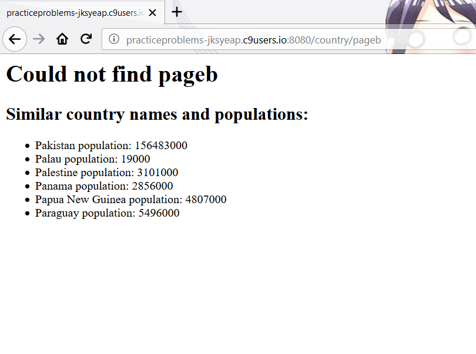

Output for a request to http://www.grotto-networking.com:
Status: OK
Status code: 200
request: {"uri":{"protocol":"http:","slashes":true,"auth":null,"host":"www.grotto-networking.com","port":80,"hostname":"www.grotto-networking.com","hash":null,"search":null,"query":null,"pathname":"/patents.html","path":"/patents.html","href":"http://www.grotto-networking.com/patents.html"},"method":"GET","headers":{}}
HTTP version: 1.1
trailers: {}
server = nginx
date = Fri, 05 Oct 2018 23:31:15 GMT
content-type = text/html
content-length = 21853
connection = close
vary = Accept-Encoding
last-modified = Tue, 14 Aug 2018 16:37:42 GMT
etag = "555d-57367d42f910c"
accept-ranges = bytes
body size: 21853
// loop for printing response.headers object
for(let header in response.headers)
console.log(header + " = " + response.headers[header]);
// changed request to the patents page
request.get("http://www.grotto-networking.com/patents.html",
function(error, response, body){
if (error) {
console.log('error:', error);
return;
};
lookAtResponse(response);
lookAtBody(body);
console.log("\n\n\n");
});Status: Not Found
Status code: 404
request: {"uri":{"protocol":"http:","slashes":true,"auth":null,"host":"www.grotto-networking.com","port":80,"hostname":"www.grotto-networking.com","hash":null,"search":null,"query":null,"pathname":"/hiClass.html","path":"/hiClass.html","href":"http://www.grotto-networking.com/hiClass.html"},"method":"GET","headers":{}}
HTTP version: 1.1
trailers: {}
server = nginx
date = Fri, 05 Oct 2018 23:40:34 GMT
content-type = text/html; charset=iso-8859-1
content-length = 210
connection = close
vary = Accept-Encoding
body size: 210
This is the expected code (404) for a page that doesn't exist
content-type header says it is application/json
In entry 35 the distance was 28.3
The whole output for this request is:
Status: OK
Status code: 200
request: {"uri":{"protocol":"https:","slashes":true,"auth":null,"host":"windsurf.grotto-networking.com","port":443,"hostname":"windsurf.grotto-networking.com","hash":null,"search":null,"query":null,"pathname":"/data/logs/windEvents2018.json","path":"/data/logs/windEvents2018.json","href":"https://windsurf.grotto-networking.com/data/logs/windEvents2018.json"},"method":"GET","headers":{}}
HTTP version: 1.1
trailers: {}
server = nginx
date = Sun, 07 Oct 2018 02:08:20 GMT
content-type = application/json
content-length = 32611
connection = close
last-modified = Sat, 06 Oct 2018 17:30:30 GMT
etag = "7f63-57792bea261ee"
accept-ranges = bytes
body size: 32611
{ start: 1530046491,
max2sec: 23.75,
board: 'FoilT-80',
max10sec: 23.29,
desc: 'Started reasonably windy then dropped when I hit the water. Was able to get out and up with some slogging in between tacks. Found good wind up near Treasure Island. Had two trips up. Big waves. Under powered at times but overall good day.',
sail: '6.6',
location: 'Berkeley',
distance: 28.3,
end: 1530055460 }

